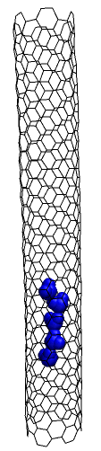
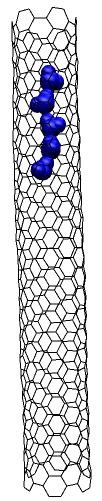

We study the transport of liquids,
specifically water through the hydrophobic channel of a carbon nanotube
by using molecular dynamics simulations. Of the two main motivations
behind this work one is trying to understand the dynamics of the water
molecules inside the slender channel of the nanotube. The other is an
interesting idea of trying to separate liquid mixtures using carbon
nanotubes. We expect one can separate mixtures of different liquids by
nanotubes because nanotubes are filled at different rates by different
liquids.

Snapshot of water chain inside nanotube at two different time intervals.